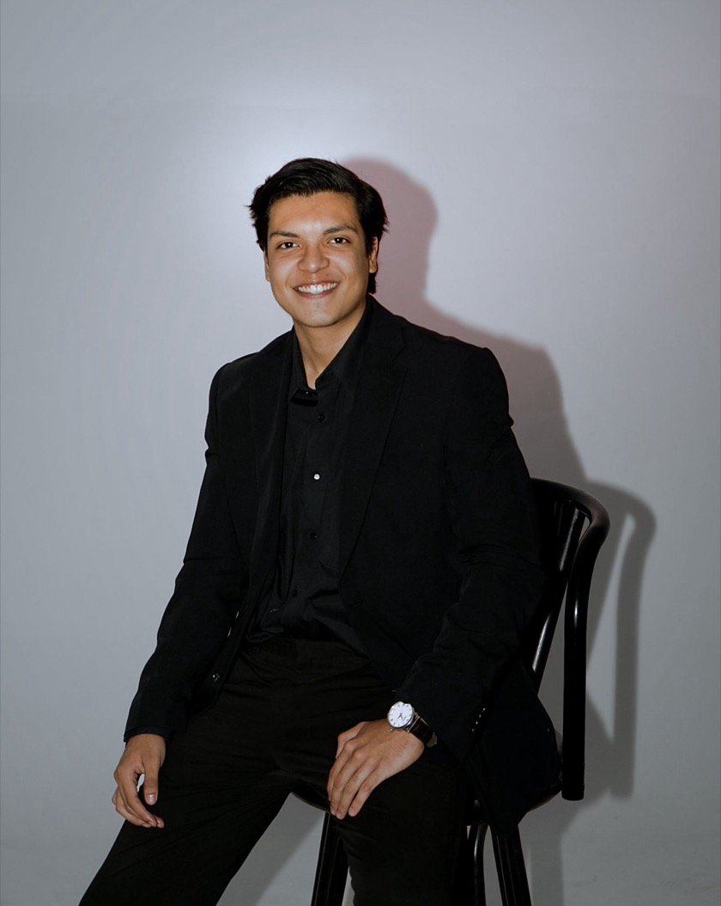

(Sobre mí)
Hola, soy Andrés

Soy Andrés Salazar, estratega digital y productor audiovisual de San Salvador. Estudio Comunicaciones y Estrategia Digital en la Universidad Mónica Herrera y desde 2024 trabajo en Homi creando estrategia y contenido para el sector inmobiliario.
Me muevo entre la idea y la cámara: planifico la estrategia, grabo, edito y ahora también diseño y construyo webs. Me gusta que las marcas se entiendan rápido y que la gente vea el contenido hasta el final.
- Base
- San Salvador, El Salvador
- Estudio
- Comunicaciones y Estrategia Digital — Universidad Mónica Herrera (2023 — presente)
- Ahora
- Homi Real Estate (2024 — presente)
- Herramientas
- Sony A7 IV, DaVinci Resolve, Figma, Blender
Toma el riesgo y contáctame.
No te arrepentirás.
Contacto
- Email salazartrujillo123@gmail.com
- LinkedIn Andrés Salazar
- Instagram @andres.salazar_22